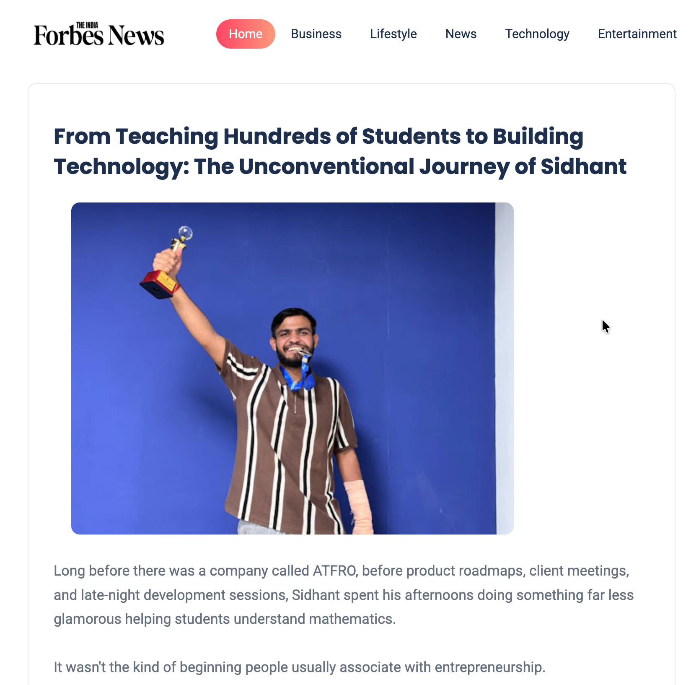

Long before there was a company called ATFRO, before product roadmaps, client meetings, and late-night development sessions, Sidhant spent his afternoons doing something far less glamorous—helping students understand mathematics.
It wasn't the kind of beginning people usually associate with entrepreneurship.
There were no startup pitches, no grand business plans, and certainly no expectations that one day he would be building technology products and leading a growing venture. At the time, he was simply focused on helping students overcome a subject that many found intimidating.
Yet, looking back, those early experiences may have played a bigger role in shaping his future than any business book or startup podcast ever could.
At just sixteen years old, Sidhant began mentoring students, eventually working with nearly 600 learners over the years. While mathematics was often the subject being taught, the lessons extended far beyond equations and formulas.
Every student approached problems differently. Some lacked confidence despite being capable. Others struggled not because they were unable to learn, but because they had never been shown a method that worked for them. Some needed guidance, some needed structure, and many simply needed someone who believed they could improve.
As he spent more time working with students, Sidhant began noticing patterns. The students who improved the most were not always the smartest in the room. They were often the most consistent. They developed habits. They followed systems. They trusted the process.
The Shift to Technology
Years later, he would find the exact same principle applying to businesses. For many young people, technology is something they consume. For Sidhant, it became something he wanted to understand.
Curiosity gradually led him deeper into the world of software, digital products, automation, and artificial intelligence. What started as an interest soon evolved into an obsession with understanding how things worked behind the scenes.
While others were fascinated by what technology could do, Sidhant became interested in why certain systems worked so effectively while others failed. It was never just about code—it was about solving problems.
Friends who know him often describe him as someone who naturally gravitates toward structure. Conversations rarely revolve around shortcuts or trends. Instead, they tend to focus on processes, execution, efficiency, and finding better ways to solve recurring challenges.
The Birth of a System
Over time, this mindset became impossible to ignore. As he worked on projects, collaborated with teams, and explored different industries, he began noticing a common theme. Many organizations had talented people. They had ambitious goals. They had access to powerful tools and resources. Yet despite all of that, they often struggled to execute effectively.
Processes were scattered. Information was fragmented. Communication broke down. Growth became difficult to sustain.
The more he observed these challenges, the more convinced he became that many businesses did not suffer from a lack of ideas. They suffered from a lack of systems.
That realization would eventually become the foundation for ATFRO. Although the company was officially founded on May 10, its story began long before that date appeared on any registration document.
For nearly six months, Sidhant worked quietly behind the scenes, researching problems, refining ideas, testing concepts, and building a vision that would later become ATFRO.
There was no dramatic launch moment. No overnight success story. No sudden breakthrough. Instead, there were months of learning, building, questioning assumptions, and continuously improving the work.
In many ways, the journey reflected the same lessons he had learned years earlier while mentoring students. Progress rarely happens instantly—it is built through consistency. ATFRO emerged from that philosophy.
Innovating with Purpose
Rather than approaching technology as an end goal, the company was created around a simpler belief: technology should help people work better, communicate better, and build stronger foundations for growth.
In an era where new tools appear almost every day and artificial intelligence dominates conversations across industries, it is easy to become distracted by innovation for the sake of innovation. Sidhant's perspective has remained different.
The question is rarely what technology can do. The question is what problem it should solve. That distinction may seem small, but it reflects a broader mindset that increasingly defines a new generation of builders.
Sidhant's own journey reflects that approach. What makes his story interesting is not simply the fact that he founded a company at nineteen. Age, after all, is temporary. What stands out is the path that brought him there.
Before becoming a founder, he spent years learning how to communicate complex ideas in simple ways. Before building products, he spent time understanding people. Before creating systems, he learned how individuals learn, adapt, and grow. Those experiences provided something that many aspiring entrepreneurs spend years trying to develop: perspective.
The ability to understand both problems and the people affected by them. Today, as ATFRO continues to evolve, that perspective remains central to everything being built. The company may operate in the world of technology, but its foundation is deeply human. It is rooted in understanding challenges, simplifying complexity, and creating solutions that help people perform at their best.
There is still a long road ahead.
“Like every founder, Sidhant faces uncertainty, competition, setbacks, and the countless lessons that come with building something from the ground up. The future will ultimately be shaped by execution, adaptation, and persistence.”
But perhaps that is exactly what makes the story compelling. Long before he founded a company, Sidhant was already doing the work that would prepare him for it. He was helping students navigate challenges, learning how people think, understanding the value of consistency, and discovering that meaningful progress—whether in education, technology, or business—is rarely the result of a single breakthrough moment.
More often, it is the result of showing up every day, solving one problem at a time. Technology became the vehicle. Building became the mission. But at its core, the journey has always been about the same thing: helping people move forward.
And for a nineteen-year-old founder still at the beginning of his story, that may be the most promising foundation of all.